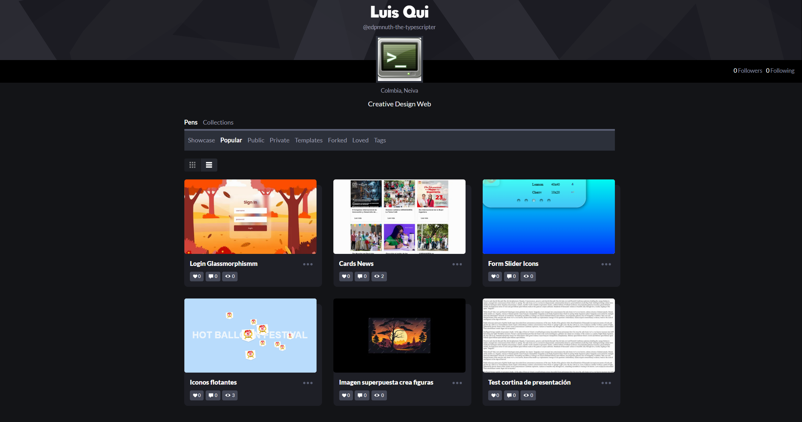
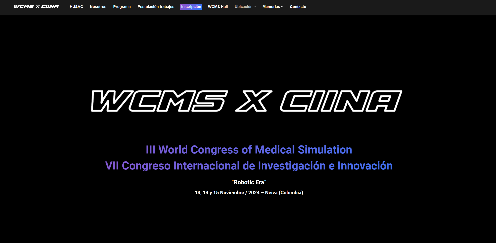
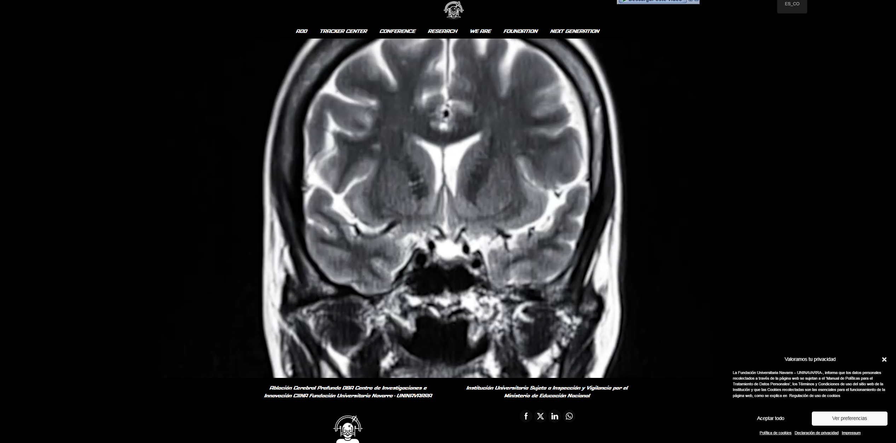

Luis Alberto Quino Manrique
Yo soy Desarrollador Frontend
Sobre mí
Soy un apasionado por el desarrollo web con experiencia en administración de servidores en la nube, desarrollo de plugins de WordPress y gestión de bases de datos MySQL. He trabajado en la administración y mantenimiento de páginas web institucionales, incluyendo actualizaciones y publicación de contenido. Además, he desarrollado módulos para aplicaciones web de gestión de inventario y ventas, y he participado en el despliegue de proyectos en entornos de prueba y producción.
Ingeniero de Sistemas Especializado en Desarrollo Web & IA
Soy Ingeniero de Sistemas con experiencia en desarrollo web y una sólida formación académica. Actualmente, estoy cursando dos especializaciones: una en Desarrollo Web y otra en Inteligencia Artificial.
- Sitio web: https://luisalbertoquino.github.io/#contact
- Teléfono: +57 304 248 3977
- Ciudad: Neiva, Colombia
- Correo electrónico: alberto.1203@hotmail.com
- Freelance: Disponible
- Intereses: Lectura, ejercicio físico y gastronomía.
Con más de 3 años de experiencia en el campo, he trabajado en la administración y mantenimiento de servidores en la nube, desarrollo de plugins para WordPress y gestión de bases de datos MySQL. Mi objetivo es combinar mis conocimientos en desarrollo web e inteligencia artificial para crear soluciones innovadoras y eficientes.
Proyectos Completados
Sitios Web Creados
Lenguajes Aprendidos
Certificaciones Obtenidas
Habilidades
Estas son algunas de las tecnologías y herramientas con las que tengo experiencia y manejo sólido.
Resumen
Ingeniero de sistemas en constante crecimiento profesional, actualmente cursando una especialización en desarrollo de software y otra en desarrollo de inteligencia artificial. Trabajo como webmaster en una fundación universitaria, gestionando y optimizando el sitio web institucional. También me dedico al desarrollo de soluciones web completas en WordPress, desde el planteamiento hasta la implementación y mantenimiento. En paralelo, estoy incursionando en el desarrollo móvil con Flutter y Firebase, expandiendo mi experiencia tanto en frontend como backend, e incluso explorando soluciones low-code para satisfacer diversas necesidades tecnológicas.
Experiencia en Soporte Técnico
Soporte Técnico
Marzo 2016 – Septiembre 2016
Symde S.A.S., Neiva, Huila, Colombia
- Elaboración de informes técnicos de mantenimiento y reparación siguiendo procedimientos y protocolos de servicio.
- Atención a requerimientos de usuarios con base en procedimientos técnicos establecidos.
- Gestión de redes y seguridad informática utilizando herramientas especializadas de administración y antimalware.
- Apoyo en la instalación y diseño de cableado estructurado para la infraestructura de red.
- Administración básica de servidores, gestión de actualizaciones y soporte técnico general.
- Mantenimiento preventivo a equipos UPS en la infraestructura de red.
Educación
Especialización en Desarrollo de Software
2024 - En curso
Corporación Universitaria Minuto de Dios - UNIMINUTO, Neiva, Huila, CO
Especialización enfocada en el diseño, desarrollo e implementación de soluciones de software avanzadas.
Certificado Profesional en Desarrollo de Inteligencia Artificial
2024 - En curso
IBM, Modalidad Virtual
Certificación en desarrollo de aplicaciones basadas en IA, con énfasis en Machine Learning, Deep Learning y soluciones de IA innovadoras.
Ingeniero de Sistemas
2017 - 2021
Corporación Universitaria del Huila CORHUILA, Neiva, Huila, CO
Grado profesional con enfoque en desarrollo de software, redes, y gestión de proyectos tecnológicos.
Especialización Tecnológica en Seguridad en Redes de Computadoras
2020 - 2021
SENA, Neiva, Huila, CO
Capacitación en configuración, gestión y seguridad en infraestructuras de red.
Experiencia Profesional
Webmaster
Mayo 2022 - Actualidad
Fundación Universitaria Navarra - UNINAVARRA
- Administración y mantenimiento del servidor en la nube donde se alojan las páginas web, dominios y configuraciones.
- Desarrollo de un plugin de WordPress para geolocalización con gestión en base de datos MySQL y librerías JavaScript.
- Administración y mantenimiento de la página web institucional en WordPress, incluyendo actualizaciones, publicación de contenido, noticias y eventos.
- Administración y gestión del sistema OJS3 para la parte editorial.
- Administración y mantenimiento de otras páginas web simples desarrolladas en WordPress para la publicidad de eventos.
- Desarrollo y creación de página web tipo congreso académico en WordPress.
- Desarrollo de página híbrida tipo congreso académico en WordPress, incluyendo funcionalidades de geolocalización y gestión de contenido interactivo.
- Cotización, diseño, desarrollo y mantenimiento de soluciones web a medida para proyectos de la institución.
Apoyo a Desarrollador Web Full Stack
Agosto 2020 - Septiembre 2021
Software FJ
- Desarrollo de módulo para aplicativo web para la gestión de inventarios.
- Desarrollo de módulo para aplicativo web para la venta de productos.
- Despliegue web de proyectos en entornos de prueba y producción.
- Apoyo en el diseño y creación de elementos gráficos para proyectos web.
- Creación e implementación de bases de datos MySQL, siguiendo modelos relacionales diseñados.
- Adaptación de diseño web a diversos dispositivos y navegadores.
Desarrollo de Aplicación Móvil para el Sector Educativo y Médico
En curso
Proyecto personal
- Desarrollo de una aplicación móvil utilizando Flutter y Firebase para el sector educativo y médico, enfocada en la gestión de contenidos y servicios.
- Diseño de interfaces interactivas y funcionalidades basadas en las necesidades del sector educativo y médico.
- Implementación de almacenamiento en la nube y bases de datos en tiempo real utilizando Firebase.
Mi Portafolio
Este es un resumen de los proyectos que he desarrollado a lo largo de mi carrera profesional. Cada proyecto representa mi habilidad para diseñar, desarrollar y ofrecer soluciones efectivas en diversos campos como desarrollo web, apps, y branding.

Diseños en Codepen
Una colección de mis diseños de Codepen para buscar ideas de desarrollo o inspiración. Puedes explorar más aquí: Codepen.

Página Web de Congreso Académico
Desarrollo de un sitio web en WordPress para eventos académicos, como congresos, con un diseño limpio y funcional. Más detalles en wcms.com.co.

Web Académica de Análisis de Datos
Desarrollo de una página web académica para el análisis de datos, con funcionalidad de congresos académicos. Puedes ver más en dba.science.
Servicios
Ofrezco soluciones profesionales en desarrollo web, creación de sistemas a medida y optimización de procesos. Con más de 5 años de experiencia, garantizo calidad y resultados eficientes para cada proyecto.
Desarrollo de Módulos en Laravel
Desarrollo módulos personalizados en Laravel para optimizar la funcionalidad y escalabilidad de tu sistema. Me especializo en crear soluciones eficientes y seguras adaptadas a tus necesidades específicas.
Diseño y Desarrollo de E-commerce
Creo tiendas en línea personalizadas, ofreciendo una experiencia de compra segura y fácil. Realizo integraciones con sistemas de pago y plataformas de envío para que tu tienda esté lista para operar al más alto nivel.
Optimización y Mantenimiento de WordPress
Realizo mantenimiento regular de sitios en WordPress, incluyendo la actualización de plugins, optimización de bases de datos y mejoras en el rendimiento, garantizando una experiencia web fluida y rápida.
Desarrollo de Sistemas a Medida y Páginas Web Corporativas
Desarrollo aplicaciones y sistemas personalizados, además de crear páginas web corporativas para fortalecer tu marca en línea. Cada proyecto está diseñado para ser funcional, estéticamente atractivo y alineado con la visión de tu empresa.
Optimización SEO y Marketing Digital
Me encargo de mejorar la visibilidad de tu sitio web en los motores de búsqueda mediante estrategias SEO avanzadas. Además, implemento campañas de marketing digital para aumentar el tráfico web y convertir visitantes en clientes.
Consultoría en Transformación Digital
Te ofrezco asesoría estratégica para la transformación digital de tu empresa, implementando soluciones tecnológicas que optimicen la eficiencia y productividad de tus procesos de negocio. Juntos mejoraremos la competitividad de tu organización.
Contacto
Contáctame para más información o consultas. ¡Estoy disponible para ayudarte!
Dirección
Calle 6 # 10-44, Neiva, Huila, 410001, Colombia
Teléfono
+573042483977
Correo Electrónico
alberto.1203@hotmail.com